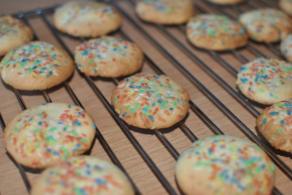

Konfetti-Cookies

- Zubereitung: ca. 1 Stunde
- Backen: ca. 12 Minuten
- Für ca. 15 Stück
Zutaten
- 260 g Mehl
- 1 TL Backpulver
- 125 g weiche Butter
- 100 g Zucker
- 1 Päckchen Vanillezucker
- 1 Vanilleschote
- 1 Ei
- 70 g bunte Streusel
Zubereitung
- Das Mehl und das Backpulver in einer Schale vermengen. In einer anderen Schale Butter, Zucker sowie Vanillezucker schaumig aufschlagen. Das Mark der Vanilleschote auskratzen und zu der Butter-Zuckermischung geben. Das Ei dazugeben und so lange
mixen, bis sich alles miteinander verbunden hat.
- Die Mehl-Backpulver-Mischung langsam hinzugeben und weiter rühren, bis ein glatter Teig entstanden ist. Die Hälfte der Streusel zum Teig geben und einarbeiten. Den Teig nun für ca. eine Stunde kalt stellen.
- Den Backofen auf 180° Celsius (Umluft) vorheizen. Für jeden Cookie etwa einen EL Teig zu einer Kugel formen und vorsichtig in die restlichen Streusel dippen, so dass sie leicht bedeckt ist. Die Kugel vorsichtig platt drücken und auf ein mit
Backpapier belegtes Backblech legen. Die Cookies für 10-12 Minuten in den Ofen schieben. Anschließend auf einem Gitter abkühlen lassen.
Quelle: http://tiny-spoon.com/konfetti-cookie/